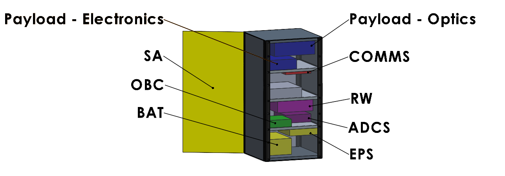
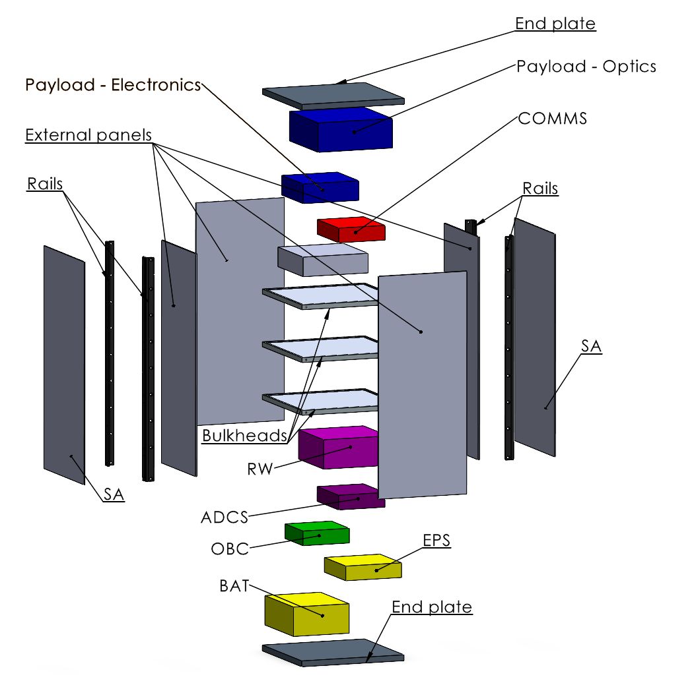
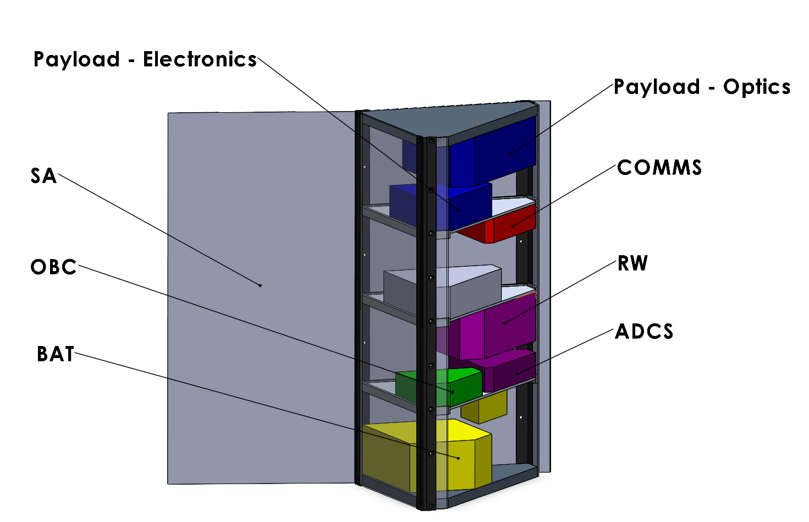
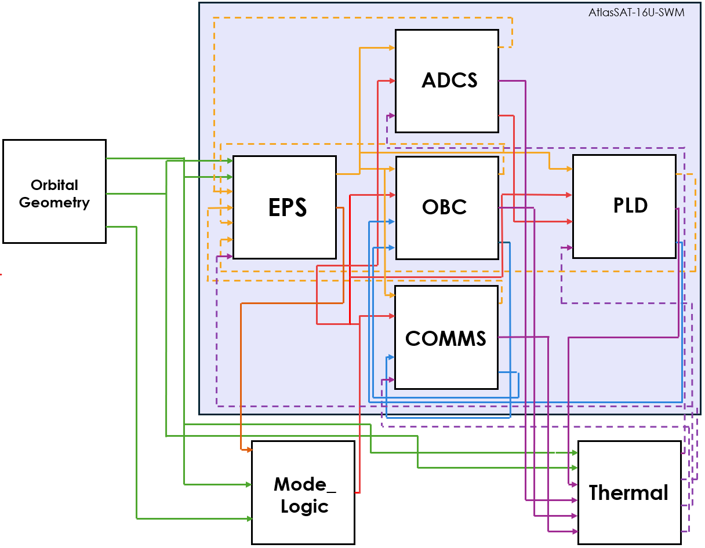

Engineering project · ATS
AtlasSAT-16U
Independent Spacecraft Design Project
AtlasSAT-16U is an independent 16U Earth-observation spacecraft design study developed around water and agricultural monitoring in the Souss-Massa region of Morocco. The project is used to develop and document end-to-end engineering work across spacecraft configuration, mechanical design, structural verification, thermal analysis, orbital analysis and systems modelling.

Overview
The project investigates the preliminary design of a small Earth-observation spacecraft intended to deliver multispectral imagery relevant to agricultural and water-resource monitoring. The public project page presents the engineering architecture and selected results; detailed calculations and project artefacts are released separately where appropriate.
Engineering Scope
- mission-level design requirements;
- spacecraft configuration;
- primary structural architecture;
- subsystem packaging;
- CAD assembly development;
- quasi-static structural analysis;
- modal analysis;
- preliminary thermal analysis;
- orbital analysis;
- power and systems modelling;
- technical documentation.
Design Basis
| Parameter | Current value |
|---|---|
| Form factor | 16U spacecraft |
| Reference launcher environment | SpaceX Rideshare Payload User's Guide, Version 10 |
| Reference deployer | 16U dispenser assumed; specific provider and interface requirements pending |
| Minimum modal criterion | 40 Hz |
| Analysis maturity | Preliminary design analysis; not qualification evidence |
Spacecraft Configuration
The preliminary packaging study places the payload elements in the upper volume, communications and payload electronics above the central equipment decks, attitude-control hardware through the middle of the stack, and the battery and electrical-power hardware in the lower volume. Longitudinal rails, end plates, bulkheads and side panels form the current structural concept; packaging and interfaces remain subject to subsystem and dispenser maturation.



Structural Analysis
The structural work separates completed results from planned verification. Quasi-static simulations have not yet been performed, so no public stress, displacement, factor-of-safety or margin-of-safety value is reported.
Planned Quasi-Static Matrix
| Case | Definition | Applied acceleration | Status |
|---|---|---|---|
| QSL-01 | Axial, XPL | +10 g | Planned — not executed |
| QSL-02-θ | Lateral sweep in the YPL–ZPL plane, θ = 0° to 165° in 15° increments | 17 g resultant; aY = 17 cos θ, aZ = 17 sin θ | Planned — not executed |
Published Structural Results
| Quasi-static analysis | Not yet performed |
|---|---|
| Peak stress / displacement | Not published — analysis pending |
| Factor or margin of safety | Not published — analysis pending |
| First eigenfrequency | 243 Hz |
| Minimum modal criterion | 40 Hz |
Modal Analysis
The completed modal analysis produced a first eigenfrequency of 243 Hz against the current 40 Hz project criterion. This value represents the present AtlasSAT structural model; the coupled spacecraft-and-dispenser configuration remains to be assessed once a deployer is selected.
Thermal Analysis
The current thermal model produced a cold-case range of 246–263 K and a hot-case range of 260–347 K. These are valid outputs of the present preliminary model and are reported separately from qualification evidence; assumptions and optical-property inputs will be documented in the revised technical dossier.
Orbital Analysis
[TODO: describe orbit assumptions, propagation tool, region of interest, revisit analysis and current maturity. Verify the provisional 550 km SSO value before publication.]
Systems / Power
[TODO: summarize power budget, operating modes and systems-level modelling.]
Selected Engineering Decisions
Primary Structure Material Strategy
[TODO: explain why the current preliminary baseline uses its selected material and what alternatives remain under consideration.]
Stiffness-Driven Architecture
[TODO: explain the role of global stiffness, launcher frequency requirements and load-path clarity in the structural concept.]
Preliminary Interface Modelling
[TODO: explain why simplified interface/contact assumptions were used at this design stage and what higher-fidelity work is required later.]
Current Limitations
- launcher/deployer interface representation remains preliminary;
- fasteners and local joint behaviour may be simplified;
- subsystem geometry may use equivalent representations;
- mesh-convergence and local-detail studies should be explicitly documented;
- thermal optical properties require verification;
- orbital and systems assumptions remain subject to mission maturation;
- results constitute engineering design analysis, not qualification evidence.
Engineering Artefacts
- WAO-ATS-1AMission OverviewNot publicly released
- WAO-ATS-3AStructural Assembly & DrawingsNot publicly released
- WAO-ATS-3BStatic Structural AnalysisNot publicly released
- WAO-ATS-3CModal AnalysisNot publicly released
- WAO-ATS-3DThermal AnalysisNot publicly released
Related Technical Notes
- WAO-TN-001 — Preliminary Modal Verification of a 16U Spacecraft Primary Structure · in revision
- WAO-TN-002 — Early-Stage Spacecraft FEA: Boundary Conditions and Deployer-Interface Assumptions · in revision